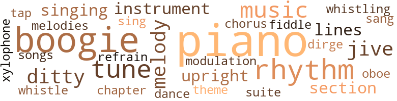
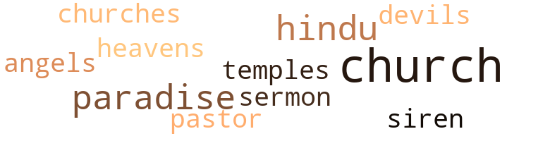

Music terms in the text
79 music-related terms matched in this text.
Most frequent terms in this topic: piano (17); boogie (10); music (4); melody (3); rhythm (3)

boogie.n.01
Definition: an instrumental version of the blues (especially for piano)
| word |
sentence |
| boogie |
At the gymnasium piano after school hours , he would often rendezvous with Joseph Gillespie , a Negro student , known as " Oh Joe Gill " because of his body-rocking , heel-splitting style of boogie , and he 'd swap a few classical runs for some hot licks . |
| boogie |
Occasionally , Joe was invited to some of these social functions to beat out some of his exclusive , spasm-inducing boogie when the students felt like being " sent . " |
| boogie |
" There just aint much room between them skits and boogie for anyone else but you , Joe . |
| boogie |
" Nothing but shoe leather on the down beat to any blues or boogie you can beat out . " |
| boogie |
And as you 'll soon hear , he can play a piano in an exclusive style that blends blues , classics and boogie into popular numbers in such a fashion that makes them go down like good smooth mixed drinks . |
| boogie |
Everyone present , including Paul , chuckled and Joe added , " And while he 's knocking off a little chow and suds , I 'll go over here and beat out a little boogie to kinda warm things up . |
| boogie |
Now Joe was strictly a boogie man , but he could serve that phase of rhythm in a style that would probably dazzle its originator . |
| boogie |
Joe was building up a pyramid of convulsive boogie rhythms which seemed to inexorably condemn each man into a sort of ritual of his own , with each ritualist seeming totally unaware of any other human presence . |
| boogie |
He knew how to blend his major and minor chords together , with the proper inversions , to produce the brilliant and scintillating ninth chords with other executions creating the beautifully strange and inspiring effects that were entirely lacking in Joe 's boogie . |
| boogie |
Paul ended his playing with a cascade of brilliantly executed major , minor , and ninth arpeggios intermixed , and then hit a lick or two of boogie with his left hand to re-establish the former atmosphere of the second element , from which all had long since departed . |
chapter.n.01
Definition: a subdivision of a written work; usually numbered and titled
| word |
sentence |
| chapter |
I think there 's a chapter in Psalms which says , ' Except the Lord build the house , they labor in vain that build it / " " Well , that 's speaking in a spiritual sense , " said Paul . |
chorus.n.01
Definition: any utterance produced simultaneously by a group
| word |
sentence |
| chorus |
" Ah-h-h-h swing it ! " said Joe , as they walked up to a platform on which a chorus of well-proportioned , scantily clad chorines were putting a spicy twist into a choral number , while the instruments of a small band in the background moaned out some low blues . |
dance.n.01
Definition: an artistic form of nonverbal communication
| word |
sentence |
| dance |
When he had completed playing each number in dance time he would repeat it leisurely - singing the verse in a warm rich baritone that made Jeannie Mae feel was especially for her . |
dirge.n.01
Definition: a song or hymn of mourning composed or performed as a memorial to a dead person
| word |
sentence |
| dirge |
The uniformed bands of the two leading Negro fraternal orders of the city had escorted the funeral procession from the church to the near-by cemetery playing a funeral dirge in a mournful march tempo . |
ditty.n.01
Definition: a short simple song (or the words of a poem intended to be sung)
| word |
sentence |
| ditty |
Ten minutes later , at exactly 11 p.m. , Officer Clancy rounded the clump of shrubbery adjacent to the bench where the basket sat , whistling as usual a kind of a forewarning ditty for vagrants to either vacate or to assume more dignified poses before his arrival . |
| ditty |
" Say Paul , " said Joe divergingly , intending to change the subject to a more pleasant plane , " I wrote another little ditty , kinda semi-classic . |
| ditty |
So with this little impromptu ditty , the boys fell to playing bid whist . |
marimba.n.01
Definition: a percussion instrument with wooden bars tuned to produce a chromatic scale and with resonators; played with small mallets
| word |
sentence |
| xylophone |
It was n't long before he had learned to tap out the tunes of his nursery songs on the toy xylophone in the nursery which he had almost appropriated as his own , always ending the tune with a harmonious third with the second stick . |
music.n.01
Definition: an artistic form of auditory communication incorporating instrumental or vocal tones in a structured and continuous manner
| word |
sentence |
| music |
These qualities , plus his above-average arrangements and swing of popular music on the piano , made him one of the more popular figures at the high school he attended . |
| music |
The swap added surprise and variety to both of their styles of playing popular music . |
| music |
Then he 'll take over and wrap up and combine all I know with some of those long-haired arpeggios and scintillating chords of his and we 'll hear some real music . " |
| music |
When he played classical music , he meticulously tried to interpret as he felt the master intended . |
musical_instrument.n.01
Definition: any of various devices or contrivances that can be used to produce musical tones or sounds
| word |
sentence |
| instrument |
Here sat a Hindu , turban and all , blowing up a mess of swing on some Oriental-like reed instrument while a cobra seemingly grinned from ear to ear and did his number . |
| instruments |
" Ah-h-h-h swing it ! " said Joe , as they walked up to a platform on which a chorus of well-proportioned , scantily clad chorines were putting a spicy twist into a choral number , while the instruments of a small band in the background moaned out some low blues . |
oboe.n.01
Definition: a slender double-reed instrument; a woodwind with a conical bore and a double-reed mouthpiece
| word |
sentence |
| oboe |
The arrogant blast of the conqueror 's bugle engulfs and presides as early Christian martyrs writhe and twist at pagan stakes , while dimly in the background is heard the grief-stricken and muffled sob of the French horn bordered by the plaintive bleat of the oboe . |
piano.n.01
Definition: a keyboard instrument that is played by depressing keys that cause hammers to strike tuned strings and produce sounds
| word |
sentence |
| piano |
These qualities , plus his above-average arrangements and swing of popular music on the piano , made him one of the more popular figures at the high school he attended . |
| piano |
At the gymnasium piano after school hours , he would often rendezvous with Joseph Gillespie , a Negro student , known as " Oh Joe Gill " because of his body-rocking , heel-splitting style of boogie , and he 'd swap a few classical runs for some hot licks . |
| piano |
Ofttimes when I am struggling for an original expression or execution of a stanza on the piano , your long golden hair becomes entangled among the keys and my fingers - and further effort and concentration upon my playing is no longer possible . |
| piano |
Paul had little or nothing at home to do those days except read or practice on the piano . |
| piano |
Paul was playing a popular tune on the piano when a knock came at the door . |
| piano |
In place of the old upright was a used but in good condition baby grand piano . |
| piano |
When Joe ended his piano thumping , he 'd simply thumped and rhythmed away a good part of the weight that Paul had walked in with . |
| piano |
Having made their entrance through the rear cellar door , jumped into their zoot suits and jitterbug caps , darkened their faces with burnt cork ( Joe did n't need much ) , Paul and Joe tiptoed up the cellar steps , eased down the hall , barged into the living room , staggering slightly , and made their way on over to the piano which was at the far side of the room . |
| piano |
He had played the piano , helped put over his little act , had a nice chat with Joe and enjoyed his dinner . |
| piano |
And as you 'll soon hear , he can play a piano in an exclusive style that blends blues , classics and boogie into popular numbers in such a fashion that makes them go down like good smooth mixed drinks . |
| piano |
And more than once he was reprimanded for trying to duplicate the feat on the piano in the reception room of the building . |
| piano |
Paul finished eating and walked over to the piano without being asked again . |
| piano |
Now Paul had a good classical foundation on the piano , which his musical pal did not have . |
| piano |
Paul seemed quite interested in the piano . |
| piano |
When not tinkering with the piano , he would get out his blackboard and chalk and sometimes spend hours writing and erasing , trying to make original lines of verses rhyme and sound like and express what he wanted them to . |
| piano |
After they had eaten a tasty and well-rounded after-dinner snack , Paul played some of the current popular numbers on the piano for them . |
| piano |
Soon she was sitting beside him on the piano bench gazing intently into Paul 's face while he played - and he in turn would gaze into hers as he sang the refrain of each melody . |
refrain.n.01
Definition: the part of a song where a soloist is joined by a group of singers
| word |
sentence |
| refrain |
Soon she was sitting beside him on the piano bench gazing intently into Paul 's face while he played - and he in turn would gaze into hers as he sang the refrain of each melody . |
rhythm.n.04
Definition: the arrangement of spoken words alternating stressed and unstressed elements
| word |
sentence |
| rhythms |
It was commonly agreed that the exhilarating effects experienced from being thrown into one of those jungle stupors that his rhythms , chords , and hot licks induced , well outweighed the tolerating of his presence . |
| rhythm |
The rhythm will do me good . " |
| rhythm |
Now Joe was strictly a boogie man , but he could serve that phase of rhythm in a style that would probably dazzle its originator . |
| rhythms |
Joe was building up a pyramid of convulsive boogie rhythms which seemed to inexorably condemn each man into a sort of ritual of his own , with each ritualist seeming totally unaware of any other human presence . |
| rhythm |
He would envelop the melody with a rhythm and style that he created as he went along . |
| rhythms |
He combined melodies , executions , harmonies , and rhythms with a versatility that alternately perplexed , inspired , and elated their emotions . |
section.n.01
Definition: a self-contained part of a larger composition (written or musical)
| word |
sentence |
| section |
In a few minutes he returned with a large tray bearing turkey , dressing , salad , nuts , homebaked bread , two large slices of pineapple pie , a large pitcher of punch and a complete section of the birthday cake . |
| section |
But no - his skin seemed to lack that creamy-yellow tint , the telltale dilating nostrils , or the fuller than usual lips that usually betrayed the type of mulatto encountered in this section of the country . |
sing.v.02
Definition: produce tones with the voice
| word |
sentence |
| sing |
" The blues got the floor , man - but I jes ' aint got the heart to sing 'em . |
| sang |
Soon she was sitting beside him on the piano bench gazing intently into Paul 's face while he played - and he in turn would gaze into hers as he sang the refrain of each melody . |
singing.n.01
Definition: the act of singing vocal music
| word |
sentence |
| singing |
And that broad that 's singing is sure telling a hard story . |
| singing |
When he had completed playing each number in dance time he would repeat it leisurely - singing the verse in a warm rich baritone that made Jeannie Mae feel was especially for her . |
song.n.01
Definition: a short musical composition with words
| word |
sentence |
| songs |
It was n't long before he had learned to tap out the tunes of his nursery songs on the toy xylophone in the nursery which he had almost appropriated as his own , always ending the tune with a harmonious third with the second stick . |
suite.n.01
Definition: a musical composition of several movements only loosely connected
| word |
sentence |
| Suite |
Suite 24 . " |
swing.n.05
Definition: a style of jazz played by big bands popular in the 1930s; flowing rhythms but less complex than later styles of jazz
| word |
sentence |
| jive |
He also picked up a lot of Joe 's jive and hep talk . |
| jive |
Of course the greater share of the credit is due to you for teaching me that jive lingo , even though I did write the little script . " |
| jive |
The second element : More or less correctly spoken English , but with jive and slang expressions . |
tapdance.v.01
Definition: dance and make rhythmic clicking sounds by means of metal plates nailed to the sole of the dance shoes
| word |
sentence |
| tap |
It was n't long before he had learned to tap out the tunes of his nursery songs on the toy xylophone in the nursery which he had almost appropriated as his own , always ending the tune with a harmonious third with the second stick . |
theme.n.03
Definition: (music) melodic subject of a musical composition
| word |
sentence |
| theme |
Joe looked through some folded papers in his wallet , picked out one , opened it up and began reading : Two " Jacksons " were chewing the fat on the street , The theme was a cute chick that one chanced to meet , The one showed her picture , the other did stare , Hey , man ! |
transition.n.04
Definition: a musical passage moving from one key to another
| word |
sentence |
| modulation |
Occasionally when he had finished a number , he would , with a smoothly and uniquely executed modulation ease off into another key , and brilliantly burst forth with another more striking arrangement of the same number . |
tune.n.01
Definition: a succession of notes forming a distinctive sequence
| word |
sentence |
| tune |
Though the school 's register listed him as white and he and his associates believed him to be so , still this inner feeling awakened and carried the tune whenever he and Joe were together . |
| lines |
Since today was Tuesday , he and Joe would have only a couple more days left to get good enough control of their lines and antics to put their little act over . |
| tune |
Paul was playing a popular tune on the piano when a knock came at the door . |
| tunes |
It was n't long before he had learned to tap out the tunes of his nursery songs on the toy xylophone in the nursery which he had almost appropriated as his own , always ending the tune with a harmonious third with the second stick . |
| tune |
It was n't long before he had learned to tap out the tunes of his nursery songs on the toy xylophone in the nursery which he had almost appropriated as his own , always ending the tune with a harmonious third with the second stick . |
| melody |
He would envelop the melody with a rhythm and style that he created as he went along . |
| melody |
There was a gentle foot-tapping and a humming of the melody , while Paul 's fingers created surrounding effects that awakened and pleased many emotions within them that had lain dormant heretofore that evening . |
| melodies |
He combined melodies , executions , harmonies , and rhythms with a versatility that alternately perplexed , inspired , and elated their emotions . |
| tunes |
He not only learned the assigned lesson well but , with this done , would constantly be trying to improvise original little tunes and harmonies of his own . |
| lines |
When not tinkering with the piano , he would get out his blackboard and chalk and sometimes spend hours writing and erasing , trying to make original lines of verses rhyme and sound like and express what he wanted them to . |
| melody |
Soon she was sitting beside him on the piano bench gazing intently into Paul 's face while he played - and he in turn would gaze into hers as he sang the refrain of each melody . |
upright.n.02
Definition: a piano with a vertical sounding board
| word |
sentence |
| upright |
In place of the old upright was a used but in good condition baby grand piano . |
| upright |
We got an old upright there . |
violin.n.01
Definition: bowed stringed instrument that is the highest member of the violin family; this instrument has four strings and a hollow body and an unfretted fingerboard and is played with a bow
| word |
sentence |
| fiddle |
No make-up is needed though she wears a little An up and down hair-do that 's right on the fiddle . |
whistle.v.01
Definition: make whistling sounds
| word |
sentence |
| whistling |
Ten minutes later , at exactly 11 p.m. , Officer Clancy rounded the clump of shrubbery adjacent to the bench where the basket sat , whistling as usual a kind of a forewarning ditty for vagrants to either vacate or to assume more dignified poses before his arrival . |
| whistle |
Next a dinner whistle blows , and one laborer shouts to his buddy , " Man ! |
Violence terms in the text
64 violence-related terms matched in this text.
Most frequent terms in this topic: ball (6); hurt (6); murder (5); pistol (5); fight (4)

aggravation.n.02
Definition: unfriendly behavior that causes anger or resentment
| word |
sentence |
| provocation |
Though good-natured , he was given to emotional outbursts , at times with very little provocation . |
dagger.n.01
Definition: a short knife with a pointed blade used for piercing or stabbing
| word |
sentence |
| dagger |
" You 'll do no such thing , " retorted the stranger , whipping out a dagger and placing it to the horse 's neck , " or I 'll kill your horse . " |
| dagger |
Paul flew into a rage , and drew back to fell the stranger , who immediately plunged the dagger to the hilt into his faithful carrier 's neck and vanished from sight . |
erase.v.01
Definition: remove from memory or existence
| word |
sentence |
| erasing |
When not tinkering with the piano , he would get out his blackboard and chalk and sometimes spend hours writing and erasing , trying to make original lines of verses rhyme and sound like and express what he wanted them to . |
fight.n.05
Definition: a boxing or wrestling match
| word |
sentence |
| fight |
So thus the fight ended , and Shakespeare won first , In tragedies , histories , most of all in blank verse . |
| fights |
" Is he still goin ' around trying to be tough and pick fights ? " |
fight.v.02
Definition: fight against or resist strongly
| word |
sentence |
| fight |
" But if a man 's not trying to jump on me , I 'd rather talk to him , even if he 's wrong , than fight him . |
| fight |
He 'd fight in a minute , whenever and wherever any of the fellows tried to bully or shove him around . |
| fighting |
" Boys , I 'm fighting 'til I fall . |
| fight |
" Indeed I 'm no coward , " said Shakespeare to John , " If you want to fight , man , do n't tarry . |
fury.n.01
Definition: a feeling of intense anger
| word |
sentence |
| rage |
Paul flew into a rage , and drew back to fell the stranger , who immediately plunged the dagger to the hilt into his faithful carrier 's neck and vanished from sight . |
| rage |
The maid flew into a rage , and knowing that she had the master 's backing , said to him , ' Listen here , fellow , do you realize where you 're at ? |
gun.n.01
Definition: a weapon that discharges a missile at high velocity (especially from a metal tube or barrel)
| word |
sentence |
| gun |
A few feet away the gorilla sits reclined against a stump , complacently picking his teeth with the gun barrel . |
hate.v.01
Definition: dislike intensely; feel antipathy or aversion towards
| word |
sentence |
| hate |
" I hate to pass a person by without offering him a lift , " thought Paul . |
homicide.n.01
Definition: the killing of a human being by another human being
| word |
sentence |
| homicide |
What Cynthia was certain to have accepted as justifiable homicide , did n't turn out that way . |
hurt.v.04
Definition: cause damage or affect negatively
| word |
sentence |
| hurt |
You would n't want to hurt these , would you ? " |
indignation.n.01
Definition: a feeling of righteous anger
| word |
sentence |
| indignation |
As he views what presents itself as a filmlike drama , Paul is perplexed by the ease and dexterity with which the Vices have a field day at misleading , beclouding , and entangling people in all walks of life , until , in righteous indignation they are halted , challenged , and routed by the triple alliance of truth , reason , and equity - kinfolk of righteousness . |
injury.n.01
Definition: any physical damage to the body caused by violence or accident or fracture etc.
| word |
sentence |
| harm |
You meant well and did n't plan any harm , and things will turn out well for you . |
| harm |
" It certainly could n't do any harm . " |
| hurt |
Any other hurt or loss can be healed or regained . |
invade.v.01
Definition: march aggressively into another's territory by military force for the purposes of conquest and occupation
| word |
sentence |
| invade |
It was n't long before the savory smell of southern fried chicken and the dainty but definite aroma of piping hot biscuits began to invade and permeate the room to challenge their nostrils . |
| invade |
Perhaps only angels would have been eligible to invade and witness the celestial coma into which they had retreated . |
kill.v.10
Definition: cause the death of, without intention
| word |
sentence |
| kill |
The only way you can stop me is to kill me . |
| kill |
And if you kill me , when the evidence that I have planted comes to light , it will look like a loveslaying - which will leave you no better off - even if you escaped penalty for murder . |
| killing |
That would be killing two birds with one stone . |
| killed |
" You see they do n't allow any horses on this road , and I 'll be killed if I 'm found walking on it . |
| kill |
" You 'll do no such thing , " retorted the stranger , whipping out a dagger and placing it to the horse 's neck , " or I 'll kill your horse . " |
| kill |
It wo n't kill you to get your wife off your mind for the few hours you 're with me . |
| killing |
And those eyes of yours are just killing me . |
murder.n.01
Definition: unlawful premeditated killing of a human being by a human being
| word |
sentence |
| murder |
And if you kill me , when the evidence that I have planted comes to light , it will look like a loveslaying - which will leave you no better off - even if you escaped penalty for murder . |
| murder |
Often Paul cogitated on the thought of murder until he had a very disturbing dream one night . |
| murder |
Cynthia was sentenced to life imprisonment for murder . |
| murder |
The story of the murder and trial had been widely circulated by the newspapers . |
| murder |
But the murder had not gone unpunished . |
musket_ball.n.01
Definition: a solid projectile that is shot by a musket
| word |
sentence |
| ball |
He shot a couple of games of eight ball , got into the joint 's perpetual crap game , made a few passes , and left the place and headed back up toward the bakery . |
| ball |
Now you go along with me , and I 'll play ball with you , and there wo n't be any friction . |
| ball |
A slim lanky body sulks along in a valley meadow , aimlessly and lazily until a rifle ball rips some bark from a tree a foot or two to the left of him . |
| ball |
Besides , the ball might hit you in the eye . " |
| ball |
I tell you this meal is really ' on the ball . ' |
| ball |
That number was really on the ball . |
| balls |
Three balls for a dime . |
neutralize.v.04
Definition: get rid of (someone who may be a threat) by killing
| word |
sentence |
| liquidating |
He watched the lightning as it played its limber games across a troubled heavens - liquidating both time and space . |
pain.v.02
Definition: cause emotional anguish or make miserable
| word |
sentence |
| hurt |
What she does n't know wo n't hurt her . |
| hurt |
I keep them at a distance be - cause I do n't want to hurt them . |
| hurt |
Because I am out to hurt someone just as I have been hurt but I do n't want it to be a fellow of your type . |
| hurt |
" But I really do n't want to hurt anyone as I have been hurt . |
parry.v.01
Definition: impede the movement of (an opponent or a ball)
| word |
sentence |
| parried |
" Yawhs , you may , Chauncey , and I 'll pay you some of your back wages as soon as my husband gives me a dollar over the weekly budget , " parried Mrs. Bonat in mock haughtiness , ending with a laugh which was joined in heartily by Bonat . |
pistol.n.01
Definition: a firearm that is held and fired with one hand
| word |
sentence |
| pistol |
Give me peace , or give me my pistol . " |
| pistol |
Dinnertime 's got a pistol on the clock ! |
| pistol |
But she done burnt it all out so bad now till I aint got enough hair left to load a pistol . " |
| pistol |
At this time one of the blackfaces whips out an old piece of a pistol . |
| pistol |
I think he would have roughed you up if you had n't pointed your pistol at him . " |
punch.n.01
Definition: (boxing) a blow with the fist
| word |
sentence |
| punch |
" Just bring me down a couple of sandwiches and a glass of that punch and I 'll cut out , Paul . |
| punch |
In a few minutes he returned with a large tray bearing turkey , dressing , salad , nuts , homebaked bread , two large slices of pineapple pie , a large pitcher of punch and a complete section of the birthday cake . |
resentment.n.01
Definition: a feeling of deep and bitter anger and ill-will
| word |
sentence |
| resentment |
You know them folks upstairs would be beaming all kind of resentment at me , even if it was n't spoken . " |
resist.v.04
Definition: withstand the force of something
| word |
sentence |
| resist |
I was powerless to resist his slightest suggestion . |
rifle.n.01
Definition: a shoulder firearm with a long barrel and a rifled bore
| word |
sentence |
| rifle |
A slim lanky body sulks along in a valley meadow , aimlessly and lazily until a rifle ball rips some bark from a tree a foot or two to the left of him . |
| rifle |
While tracking down a gorilla in a dense African jungle one of a pair of big game hunters hears the ominous crack of his companion 's rifle a stone 's throw to the left of him . |
shoot.v.02
Definition: kill by firing a missile
| word |
sentence |
| shot |
A few days later , the maid shot him in the kitchen , and said that he attempted an attack on her . |
shooting.n.02
Definition: killing someone by gunfire
| word |
sentence |
| shooting |
And on the day of her trial , when the library desk attendant attested that Joe had entered the library before her , and had sat there almost half an hour talking to her before the shooting - and the librarian who had overheard the latter part of their conversation , truthfully repeated it , her story fell through . |
sting.n.03
Definition: a painful wound caused by the thrust of an insect's stinger into skin
| word |
sentence |
| bite |
" Would you care for a bite to eat in the diner ? " |
| bite |
" Come on , Paul , let 's take a little walk down the street while Mother and Jeannie are getting you a little bite to eat and some refreshments . " |
vilify.v.01
Definition: spread negative information about
| word |
sentence |
| revile |
A haughty society matron , who insists on servility as well as service , condescends to revile her domestic for her reciprocal attitude about the house . |
violence.n.01
Definition: an act of aggression (as one against a person who resists)
| word |
sentence |
| violence |
No , he would n't use any violence . |
Religion terms in the text
16 religion-related terms matched in this text.
Most frequent terms in this topic: church (3); Hindu (2); Paradise (2); siren (1); temples (1)

church.n.02
Definition: a place for public (especially Christian) worship
| word |
sentence |
| church |
" But the church hands us the theories , and it 's up to us to test them in practice . |
| church |
And that can seldom be done in the church pew - that has to be done wherever the occasion arises . . . Home - on the job - in the street or anywhere . " |
| church |
The uniformed bands of the two leading Negro fraternal orders of the city had escorted the funeral procession from the church to the near-by cemetery playing a funeral dirge in a mournful march tempo . |
church.n.04
Definition: the body of people who attend or belong to a particular local church
| word |
sentence |
| churches |
I 'll leave the preaching for the churches to do . " |
| Church |
The following day , Sunday , they all went to the Baptist Church that Benny 's family attended . |
curate.n.01
Definition: a person authorized to conduct religious worship
| word |
sentence |
| pastor |
At the end of services , Mrs. Seth introduced Paul to her pastor and several of her church members , who seemed impressed by Paul 's warmth and sincerity . |
eden.n.01
Definition: any place of complete bliss and delight and peace
| word |
sentence |
| Paradise |
Like the strains of harmonious harptones That celestial fingers distill , With a blend of the voices of Paradise 'T was you then , to me dear , and it 's still . |
| heavens |
A graceful swallow , seemingly on a beauty flight , saucily twists and turns as it glides through a calm and poetic heavens . |
| Paradise |
My ' Paradise Lost ' and your play ' King Lear ' Have proved us quite equal in power I fear . " |
hindu.n.02
Definition: a person who adheres to Hinduism
| word |
sentence |
| Hindu |
Here sat a Hindu , turban and all , blowing up a mess of swing on some Oriental-like reed instrument while a cobra seemingly grinned from ear to ear and did his number . |
| Hindu |
And if he had any , that Hindu would be outrunning a striped ape right now . " |
saint.n.02
Definition: person of exceptional holiness
| word |
sentence |
| angels |
Perhaps only angels would have been eligible to invade and witness the celestial coma into which they had retreated . |
satan.n.01
Definition: (Judeo-Christian and Islamic religions) chief spirit of evil and adversary of God; tempter of mankind; master of Hell
| word |
sentence |
| devils |
" Well , the poor devils have to make a living . |
sermon.n.02
Definition: a moralistic rebuke
| word |
sentence |
| sermon |
Reverend Tuggle 's sermon was very inspiring and invigorating as he extended and extolled the Beatitudes . |
siren.n.01
Definition: a sea nymph (part woman and part bird) supposed to lure sailors to destruction on the rocks where the nymphs lived
| word |
sentence |
| siren |
He 'd forget this incident and leave this siren out of his life . |
temple.n.03
Definition: an edifice devoted to special or exalted purposes
| word |
sentence |
| temples |
And she 'd better do something about that graying at the temples , too . |